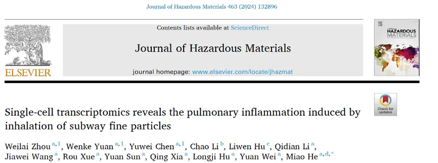
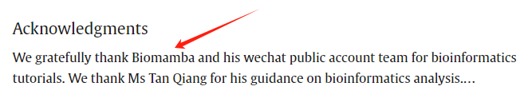
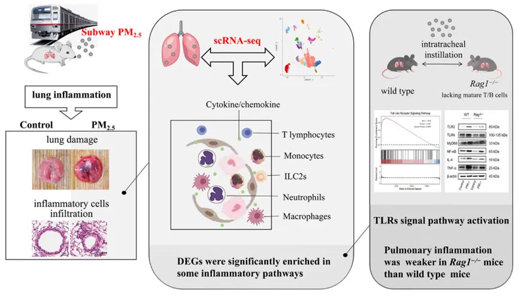
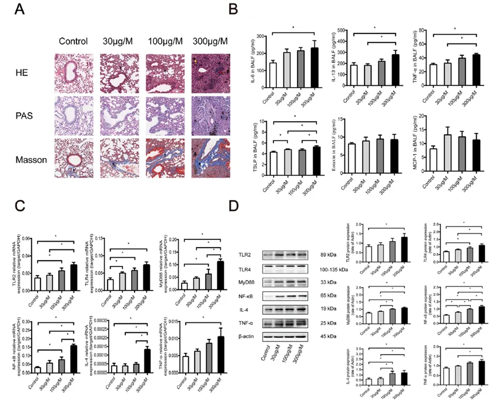
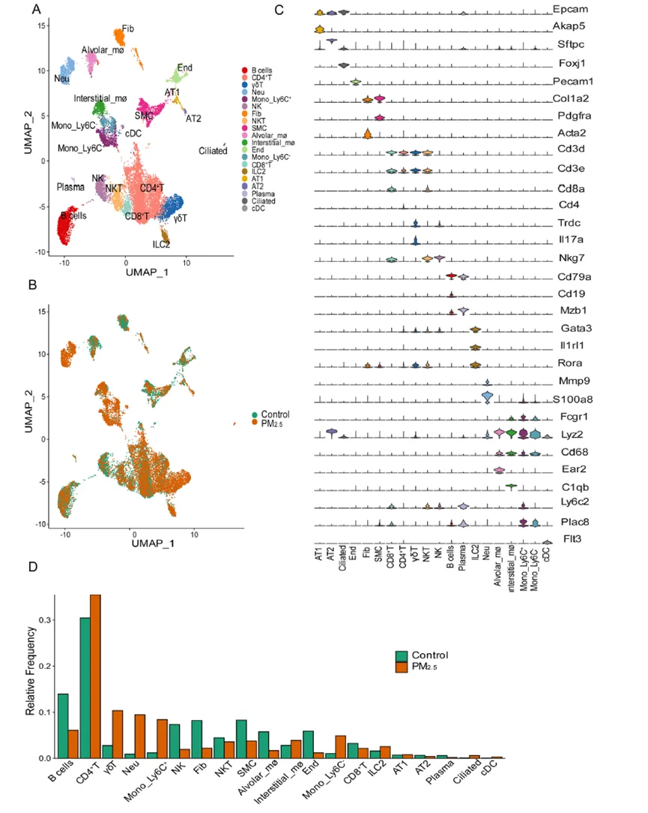
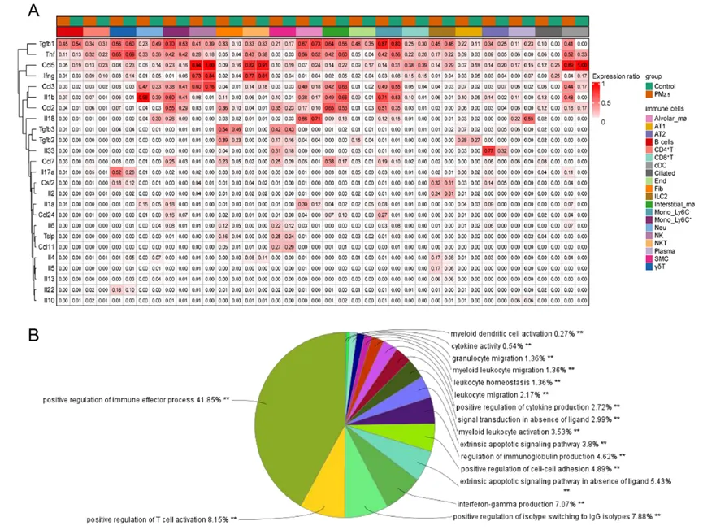
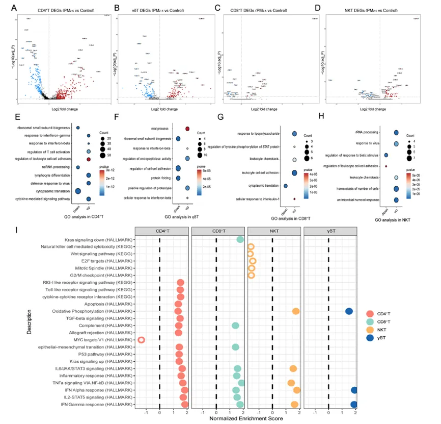
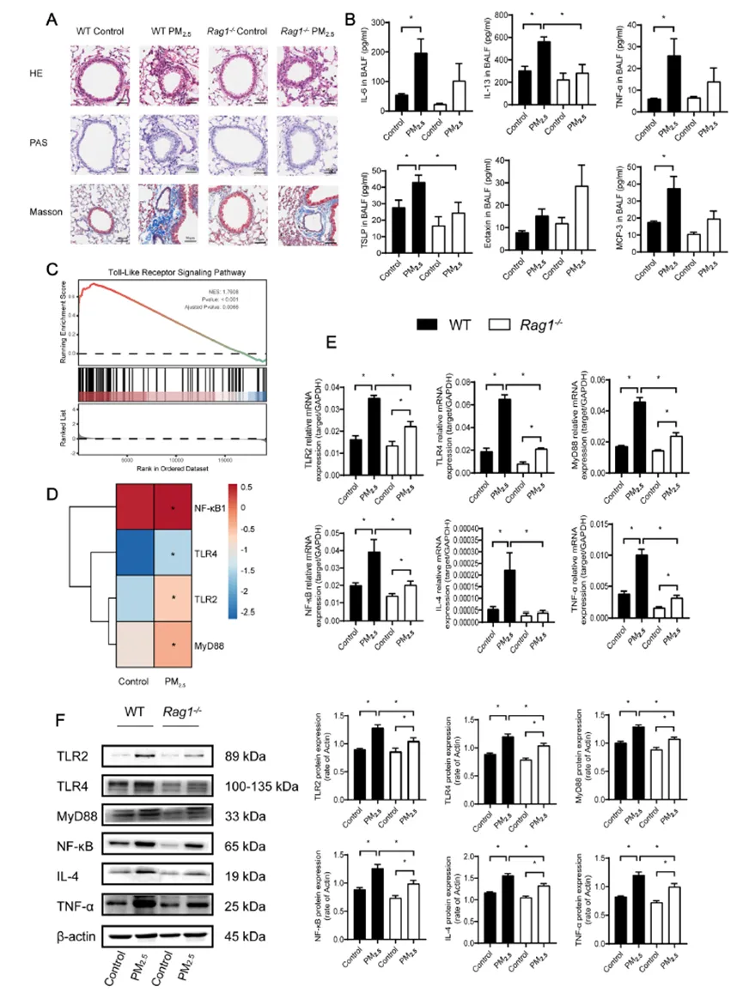
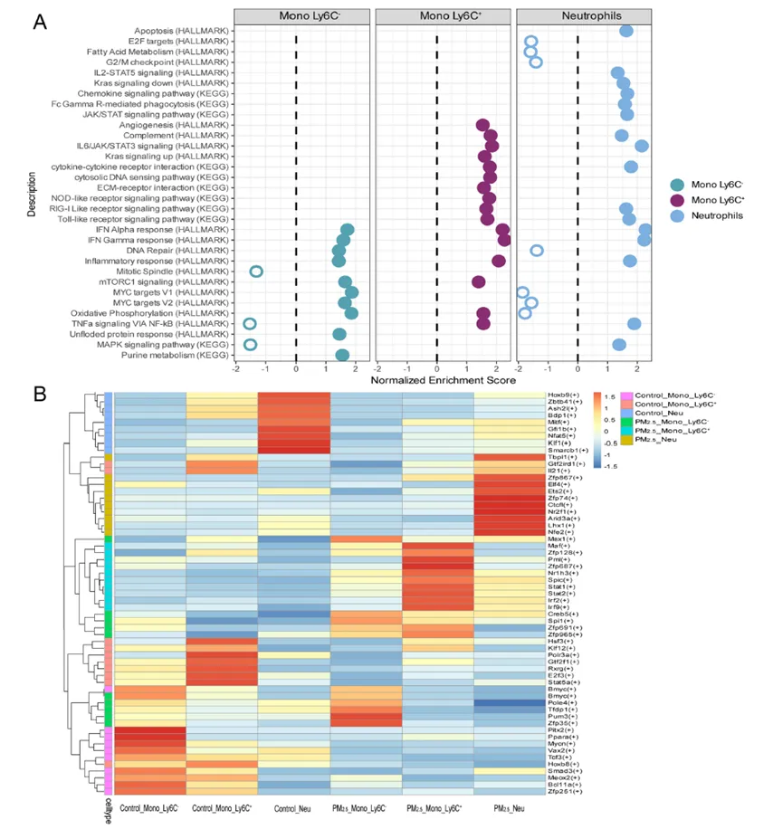
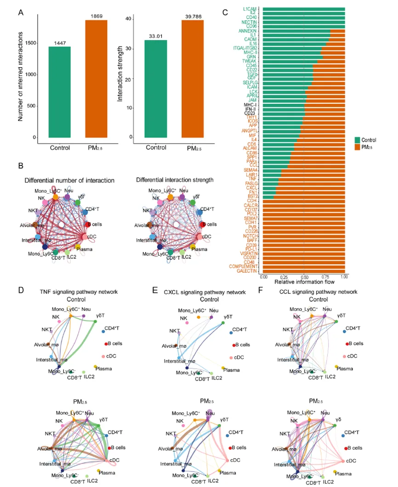

13分+文章利用scRNA-Seq揭示地铁细颗粒物引起肺部炎症的分子机制
原文：https://mp.weixin.qq.com/s?__biz=MzAwMzIzOTk5OQ==&mid=2247511886&idx=1&sn=31c712d00377b0f0ed33703b5b4fbfd8&chksm=9b3cd61eac4b5f084fde14a2eb50356f2f40a66c608d38909f12a3d81f48cff029a09ce2ee8c#rd 合集：单细胞教程全收录 / 文献速递
写在前面
人们乘坐地铁时，不可避免地在地铁站台上吸入细颗粒物（PM2.5），但PM2.5对人体又有哪些危害呢，今天和大家分享一篇文章，题目为“单细胞转录组学揭示吸入地铁细颗粒物引起的肺部炎症”，作者通过单细胞转录组学和实验验证了PM2.5引起肺部损伤及分子机制 ，首次报导地铁PM2.5与肺部炎症损伤间的相关性，认为在地铁站应采取有效的措施来减少PM2.5的产生，保护人们的身体健康。
文章链接：
https://www.sciencedirect.com/science/article/pii/S0304389423021805
DOI: 10.1016/j.jhazmat.2023.132896
IF： 13.6

作者在文章的Acknowledgement对我们进行了致谢 ：
这里也预祝我们的粉丝们早日命中心仪的期刊，若是大家觉得我平时分享的代码或生信教程有那么点 好用，可以在文章里以这种格式致谢Biomamba，希望咱们这个系列也能更新个百八十篇 :
:
*
Since Biomamba and his wechat public account team produce bioinformatics tutorials elaborately and share code with annotation, we thank Biomamba for their guidance in bioinformatics and data analysis for the current study.
如果需要数据分析指导 、生信热点全文复现 、自测数据个性化分析 辅导，欢迎联系客服微信[Biomamba_yunying]
一、摘要

●地铁PM2.5吸入会引起肺部炎症
●肺部scRNA-seq描述了地铁PM2.5对小鼠的细胞特异性反应。
●scRNA-seq突出了Toll样受体在地铁PM2.5诱导的肺部炎症中的作用
●提供了地铁PM2.5暴露相关肺损伤的机制见解。
二、结论
首先，作者观察到地铁PM2.5引起小鼠的肺部炎症 反应，表现为组织中的炎症细胞浸润 和胶原沉积 ，支气管肺泡灌洗液中的炎性细胞因子增强和肺部Toll样受体信号 通路激活。此外，单细胞RNA测序结果显示PM2.5诱导肺部细胞特异性反应，通过分子和功能特性鉴定了 20 个免疫亚群，其中CD4 +T细胞和γδ T细胞 的特定细胞群被认为是PM2.5诱发肺炎的主要来源，此外，我们证明 Rag1−/−小鼠的肺炎性损伤明显减轻，且功能性T细胞和B细胞明显减少。我们证明了 Rag1 −/−小鼠中肺组织的轻微炎症可能通过激活细胞内分子网络且依赖单核细胞和中性粒细胞。
三、研究背景
重组激活型基因1（Rag1）是编码Ig分子和TCR基因重排的重组酶，小鼠Rag1被敲除后，Ig和TCR既不能重排也不能表达，表现为T、B淋巴细胞重症联合缺陷。因此作者构建了Rag1−/−小鼠模型，来深入研究T、B淋巴在PM2.5诱导的肺部损伤中的分子机制。
四、结果
● 1、地铁PM2.5引起小鼠的肺部炎症****
为了评估地铁PM2.5是否引起机体损伤，作者给予小鼠各30μg/ M 、100μg/ M 和300μg/ M的PM 2.5，然后使用H&E、PAS和Masson染色对肺部进行组织病理学检查，结果显示相比于Control组，PM2.5暴露导致肺组织结构明显异常，肺泡萎缩塌陷，融合扩张形成肺大疱，肺实质伴肺泡壁增厚，单核细胞或多形核细胞浸润所有气道周围，肺组织中的胶原纤维增加（Fig.1A）。同时PM2.5暴露导致肺支气管肺泡灌洗液 （BALF）中白细胞介素 （IL）−6、IL-13、肿瘤坏死因子 （TNF）-α和胸腺基质淋巴生成素 （TSLP）明显增加（Fig.1B）。此外，RT-qPCR和WB检测肺组织中Toll样受体（TLR）2、TLR4、髓系分化因子88（MyD88）、核因子（NF）-κB、IL-4和TNF-α表达，结果显示其基因水平（Fig.1C）和蛋白水平（Fig.1D）均明显升高，以上结果表明从地铁站台收集的PM2.5导致的肺炎损伤诱导有可能是通过 TLR2、4/MyD88/NF-κB 炎症通路引起的。

● 2、肺细胞scRNA-Seq鉴定出多种细胞簇
作者通过对小鼠肺组织细胞进行分析，通过经典标志物和单R鉴定出20个具有特定分子标记的不同群体，包括B细胞、T细胞、单核细胞、中性粒细胞、纤维细胞、平滑肌细胞、巨噬细胞和2组先天淋巴样细胞(ILC2s)等（Fig.2A），上述所有细胞类型在对照组和地铁PM 2.5组小鼠中比例相似，无显著差异（Fig.2B）,CD4+T细胞(CD3d、CD3e和CD4)、CD8+T细胞(CD3d、CD3e和CD8a)、NKT细胞(CD3d、CD3e、CD8a和Nkg7)、γδT细胞(CD3d、CD3e、Trdc和Il17a)、B细胞(CD79a和CD19)、单核细胞(Lyz2、CD68、Plac8和Fcgr1)、中性粒细胞(S100a8和Mmp9)、间质巨噬细胞(Lyz2、CD68和C1qb)和ILC2s (Gata3、Il1rl1、Rora)等经典标志物在相应细胞群中表达（Fig.2C）。但当在每个细胞中分析独特的基因和总RNA分子，并检测一个细胞中每个基因的RNA分子，结果发现地铁PM2.5给药的小鼠中，一些细胞群可能比对照组强烈表达更高数量的RNA转录本，其中CD4+T细胞和γδT细胞、Ly6C+和Ly6C−单核细胞、中性粒细胞、间质巨噬细胞和ILC2s簇的数量显著增加，同时地铁PM2.5处理也降低了一些集群的水平，包括B细胞、NK细胞、纤维细胞、平滑肌细胞、肺泡巨噬细胞和内皮细胞（Fig.2D）。以上结果表明，地铁PM2.5处理后，肺组织中多种T细胞亚群、中性粒细胞和单核细胞丰富且明显增加，这可能与地铁PM2.5诱导的肺部炎症有关。

● 3、细胞因子由多个细胞差异表达
多种促炎细胞因子在地铁PM 2.5所致肺部炎症的发病机制中起关键作用，因此接下来作者评估了这些细胞簇与炎症相关的经典细胞因子的表达。显著表达的细胞因子包括TGF-β1、TNF、CCL5 (RANTES)、IFN-γ、CCL3 (MIP-1α)、IL-1β和CCL2 (MCP-1)( Fig.3A)。在对照组和地铁PM2.5组中，CCL5 (RANTES)几乎全部表达，其表达受气管内灌注影响不明显。但作者发现地铁PM2.5会促进Ly6C+和Ly6C−单核细胞、间质巨噬细胞、cDCs、内皮细胞和纤维细胞产生TGF-β1；肺泡巨噬细胞、cDCs、NKT细胞、NK细胞、CD4+ T细胞和I型肺泡细胞等细胞簇表达TNF-α，CCL3 (MIP-1α)在中性粒细胞、肺泡巨噬细胞和cDCs中表达。IL-1β在中性粒细胞、Ly6C+和Ly6C -单核细胞、cDCs和肺泡巨噬细胞中高度表达。CCL2 (MCP-1)的主要细胞来源似乎是经地铁PM2.5刺激产生的Ly6C+和Ly6C -单核细胞、肺泡巨噬细胞、纤维细胞和平滑肌细胞。CCL7 (MCP-3)主要在Ly6C+单核细胞、间质巨噬细胞、纤维细胞和平滑肌细胞中被证实。γδT细胞表达Il - 17α和IL-22。ILC2s表达IL-4和IL-5，但表达水平明显降低。多种关键免疫细胞对关键炎症因子IL-6、IL-18、IL-33、TGF-β2、TGF-β3的表达存在差异。当对炎症因子的功能进行分析时（Fig.3B），发现主要与免疫效应过程的正调控(41.85%)、T细胞活化的正调控(8.15%)等有关。因此，免疫反应和T细胞可能在地铁PM2.5诱发肺部炎症的过程中起主要作用。

********●4、 地铁PM2.5暴露改变了小鼠肺T细胞的基因表达谱
为了探究T细胞的功能，作者在对照组和地铁PM 2.5两组中鉴定了上调和下调的DEGs。DEG 的倍数变化通过火山图进行可视化（Fig.4A-D），通过GO富集分析进一步研究了这些显着变化的基因的功能，上调基因主要富集在细胞因子介导的信号通路、淋巴细胞分化、T 细胞活化的调节、白细胞细胞粘附、对病毒的防御反应、抗菌体液反应、rRNA 加工和对脂多糖的反应中，而下调基因主要集中在核糖体小亚基生物发生和细胞质翻译中（Fig.4E-H）。GSEA分析显示许多免疫通路在T细胞亚群中被激活（Fig.4I），包括INF-γ和INF-α反应（CD4、CD8、NK和γδT细胞）、TNF-α通过NF-κB信号传导（CD4、CD8和NKT细胞）、IL-6/JAK/STAT3信号传导（CD4、CD8和NKT细胞）、TGF-β信号传导（CD4+T细胞）和TLRs信号传导（CD4+T细胞）通路等。同时，一些通路可能会被抑制，例如NKT细胞中的Wnt信号通路和G2M检查点。以上结果发现在 T 细胞亚群的这些干扰通路中，大多数与炎症信号和免疫系统有关。

********●5、 地铁PM2.5暴露导致依赖淋巴细胞的肺部炎症
Rag1 −/−小鼠缺乏成熟的T细胞和B细胞，常用来测定淋巴细胞的功能。与对照组相比，在地铁PM2.5处理的Rag1−/−小鼠中观察到单核细胞和多形核细胞的募集，以及胶原纤维的增加(Fig.5A)。Rag1−/−敲除后小鼠的病理明显改变明。与组织学变化一致，与PM2.5组相比，PM2.5处理Rag1−/−小鼠BALF中所有炎症因子(IL-6、TNF-α、MCP-3、IL-13、Eotaxin和TSLP)的表达水平均降低(Fig.5B)。GSEA 分析和热图显示PM2.5刺激后 Tlr2, Tlr4, Myd88 and Nfκb 基因明显上调(Fig.5C-D)，RT-qPCR和WB显示肺组织中 Tlr2, Tlr4, Myd88 and Nfκb 水平经PM2.5刺激后明显上调，而进行Rag1敲除后有所下降(Fig.5E-F)。以上结果显示淋巴细胞在地PM2.5诱导的肺部炎症损伤中起主要作用，并与TLRs/MyD88/NF-κB信号通路的激活有关。

************●6、 在 PM2.5诱导的肺部炎症过程中，单核细胞和嗜****中性粒细胞的典型通路和转录因子上调
显著富集评分（NES）显示，中性粒细胞中主要包括 “IFN-γ和IFN-α应答”，由IL-6/JAK/STAT3 信号通路激活，与Ly6C +单核细胞一致，但是在 Ly6C-单核细胞中，氧化磷酸化和 MYC 靶向v1通路被最显著地激活。同时在 Ly6C + 单核细胞和嗜中性粒细胞中 TLR 信号通路也被显著激活(Fig.6A)。上游调节因子分析预测了几种上游调节因子的激活增强，包括Tbpl1、Zfp867、Elf4、Est2、Zfp74、ctcf1、Nr2f1、Arid3a、Lhx1和Nfe2(来自PM2.5中性粒细胞)，Maf、Zfp687、Pml、Stat1、Stat2、Irf2、Irf9、Zfp128、Nr1h3和Spic(来自PM2.5 Ly6C+单核细胞)，以及Pum3、Zfp35、Tfdp1、Msx1、Spi1、Creb5、Pole4、Bmyc、Zfp691和Zfp965(来自PM2.5Ly6C-单核细胞)（Fig.6B）。其中，Est2、Pml、Stat2、Zfp128和Zfp35参与炎症信号通路相关的生物学过程，Elf4和Zfp35参与免疫细胞增殖和分化的调控，Irf2和Irf9参与免疫过程。以上结果显示在淋巴细胞缺失的Rag1−/−小鼠中，中性粒细胞和单核细胞炎症信号通路相关基因上调，介导PM2.5引起的肺部炎症反应。

**********●**7、 PM2.5暴露引起小鼠肺内免疫细胞紊乱交流
为了分析肺免疫细胞之间相互作用中的干扰，作者根据scRNA-seq数据的整合配体和受体信息展示了假定的细胞间相互作用。暴露于PM2.5后，免疫细胞之间的细胞间相互作用的数量和强度增加，尤其是单核细胞(Ly6C+和Ly6C-)、间质巨噬细胞、cDCs、ILC2s和血浆(Fig.7A-B)。结果证明，暴露于地铁PM2.5后，与炎症信号通路相关的相互作用(Baff、Sema7a、Cd6、Cd48、Mif、Tnf、Ccl和Cxcl)增加，而与炎症负调控相关的相互作用(Cd96和Cd22)减少(Fig.7C)。进一步分析发现，TNF信号通路从γδT细胞到cDCs、Ly6C+单核细胞、中性粒细胞和肺泡巨噬细胞的增强最为明显(Fig.7D)，而γδT细胞和中性粒细胞在CXCL信号通路中具有更多的传入相互作用(Fig.7E)， CCL信号通路从NK细胞到Ly6C-单核细胞、中性粒细胞和间质巨噬细胞的增强最为明显(Fig.7F)。以上结果表明单核细胞和中性粒细胞是炎症信号的主要来源和介质，它们在 T细胞和B细胞缺乏时在肺部炎症中有潜在作用。

五、总结
本研究表明吸入PM2.5引起的肺部炎症是以中性粒细胞炎症和大量 CD4 + T 细胞浸润为特征的。T 细胞是吸入地铁 PM2.5引起的肺部炎症的核心， T 细胞和 B 细胞缺乏可减轻炎症反应。TLRs 信号通路是地铁 PM2.5发生肺部炎症的关键通路之一。作者认为每天乘坐地铁并暴露在地下交通环境中的人们应该关注呼吸健康。地铁车站应采取加强通风 和排放控制 等有效措施降低 PM2.5浓度。

如何联系我们

 公众号后台消息回复不便，这里给大家留一下领取资料及免费服务器(足够支持你完成硕博生涯的生信环境)的微信号 ，方便各位随时交流、提建议（别问在么，添加时直接备注来意）。此外呼声一直很高的交流群 也建好了，欢迎大家入群讨论：
公众号后台消息回复不便，这里给大家留一下领取资料及免费服务器(足够支持你完成硕博生涯的生信环境)的微信号 ，方便各位随时交流、提建议（别问在么，添加时直接备注来意）。此外呼声一直很高的交流群 也建好了，欢迎大家入群讨论：
大家可以阅读完这几篇之后添加给生信入门初学者的小贴士 如何搜索公众号过往发布内容

 您点的每个赞和在看，我都认真当成了喜欢
您点的每个赞和在看，我都认真当成了喜欢